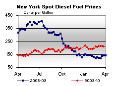

Released on March 31, 2010
(Next Release on April 7, 2010)
Recent Changes to U.S. Refinery Capacity
The previous edition of This Week In Petroleum reported negative earnings for major refiners during the fourth quarter of 2009, reflecting declining petroleum product demand and a weak economy over the past 18 months. One consequence of the sharp decline in oil demand has been the development of significant excess refining capacity and the shutdown or idling of several U.S. refineries. Two East Coast refineries have been closed in recent months; and several smaller plants have been idled, but could be brought back on line in a matter of weeks. On the other hand, a significant 180,000-barrel-per-day capacity addition at the existing Marathon refinery in Garyville, Louisiana was completed in January that will partially offset these closures.
Company |
Refinery |
State |
Type of Change |
Announced Date of Change |
2010 EIA Refinery Capacity Report Status |
Capacity Change (Mbbl/d) |
|
Flying J |
Big West, Bakersfield |
CA |
Idled Indefinitely |
Jan 2009 |
Idled |
-66 |
|
Valero |
Delaware City |
DE |
Permanent Closure |
Nov 20, 2009 |
Shut-down Jan 1, 2010 |
-182 |
|
Sunoco |
Eagle Point, Westville |
NJ |
Idled Indefinitely |
Oct 6, 2009 |
N/A |
-- |
|
Permanently Closed |
Feb 1, 2010 |
Shut-down Jan 1, 2010 |
-145 |
||||
Western |
Bloomfield |
NM |
Idled Indefinitely |
Nov 9, 2009 |
Idled |
-17 |
|
Marathon |
Garyville |
LA |
Expansion |
Jan 2010 |
Expansion Jan 1, 2010 |
+180 |
|
Sources: Various news releases and information on company websites. N/A= Not Applicable |
|||||||
One indicator of potential industry financial performance that captures both demand and capacity is refinery utilization (calculated as gross inputs divided by operable refinery capacity). Consistent with today’s economic environment, analysts have seen the Energy Information Administration’s (EIA) refinery utilization measure drop from pre-recession levels of more than 90 percent in 2007 to rates hovering around 80 percent in recent months. In order to properly interpret these changes, users may need to better understand EIA’s definition of refinery capacity, and be aware of timing issues related to reporting and publication cycles.
Refinery capacities are collected as part of EIA’s monthly petroleum supply data, and are reflected in capacity and utilization figures in the Petroleum Supply Monthly (PSM) and Weekly Petroleum Status Report (WPSR). For ease of reporting and interpretation, the “refinery capacity” expressed here and in EIA data refers to crude oil distillation capacity alone. EIA reports “operable” refinery capacity, which is the sum of “operating” and “idle” capacities, in the PSM and WPSR. When permanently shut down, capacity is removed from the totals. While Western’s Bloomfield and Flying J’s Bakersfield plants are not currently operating, they fall under the official definition of “idle,” since they report that they are capable of resuming operation within 30 days, and thus are still being counted under operable capacity.
There is also a timing issue that users should understand. The operable capacity totals reported in the WPSR, and used to calculate the weekly utilization rate, are updated when the WPSR is benchmarked to the latest monthly data, which occurs more than 2 months after the reporting month, and at least 3 months after the effective refinery capacity update. The WPSRs published since March 17 reflect refinery capacity as of December 1, 2009 from the latest edition of the PSM. When the January PSM data are used for the next WPSR benchmarking cycle in mid-to- late April, users should see a decrease in the WPSR operable capacity that accounts for the capacity changes in Table 1 reported by companies for January. (Note that some January changes shown in Table 1 still might not be included in the January data since PSM respondents are asked to report capacity as of the start of the reporting month.)
Since the utilization calculation uses actual inputs to distillation (reported weekly) divided by operable capacity (lagged several months due to reporting and publication cycles), recent refinery closures can make the weekly utilization rate appear lower than if the closures were removed from the equation altogether. Also, the monthly utilization rate can change significantly from the reported weekly rate (characterized as an estimate) for the same period, since the monthly rate includes more complete input data and fully updated capacities.
U.S. Average Gasoline and Diesel Prices Slip
For the first time in six weeks, the U.S. average price for regular gasoline fell, dropping two cents to $2.80 per gallon, $0.75 above last year at this time. Changes on a regional basis were mixed, ranging from a drop of a nickel to an increase of two cents. On the East Coast, the price slipped over a penny to $2.77 per gallon. The largest drop occurred in the Midwest, where the average fell more than a nickel to $2.75 per gallon. The Gulf Coast average was $2.68 per gallon after a drop of a penny. The average in the Rocky Mountains rose two cents to $2.79 per gallon. The West Coast price inched up less than half a cent to $3.04 per gallon and the California price slipped less than half a cent, remaining at $3.09 per gallon.
The U.S. average price for diesel fuel also declined somewhat, slipping nearly a penny to $2.94 per gallon. The average was $0.72 above a year ago. Price changes were mixed on a regional basis, with the East Coast and the Midwest each dipping about a penny to $2.97 per gallon and $2.91 per gallon, respectively. The Gulf Coast fell a half cent to settle at $2.90 per gallon. The Rocky Mountain average went up over a penny to $2.97 per gallon. At $3.03 per gallon, the average on the West Coast was unchanged and the California price was essentially unchanged at $3.07 per gallon.
Propane Stocks Build Slightly
U.S. inventories of propane built by 0.5 million barrels last week to 25.6 million barrels in total. The East Coast and Gulf Coast regions each realized a gain of 0.3 million barrels. The Midwest and Rocky Mountain/West Coast regions each drew 0.1 million barrels of propane stocks. Propylene non-fuel use inventories decreased their share of total propane/propylene stocks from 9.0 percent to 8.5 percent.
Text from the previous editions of “This Week In Petroleum” is now accessible through a link at the top right-hand corner of this page.
| Retail Prices (Cents Per Gallon) | |||||||
| Retail Data | Changes From | Retail Data | Changes From | ||||
| 03/29/10 | Week | Year | 03/29/10 | Week | Year | ||
| Gasoline | 279.8 | Diesel Fuel | 293.9 | ||||
| Spot Prices (Cents Per Gallon*) | |||||||||||||||||||||||||||||||||||
|  | |||||||||||||||||||||||||||||||||||
|
|||||||||||||||||||||||||||||||||||
| *Note: Crude Oil WTI Price in Dollars per Barrel. | |||||||||||||||||||||||||||||||||||
| Stocks (Million Barrels) | |||||||
 |
|||||||
| Stocks Data | Changes From | Stocks Data | Changes From | ||||
| 03/26/10 | Week | Year | 03/26/10 | Week | Year | ||
| Crude Oil | 354.2 | Distillate | 144.6 | ||||
| Gasoline | 224.9 | Propane | 25.617 | ||||